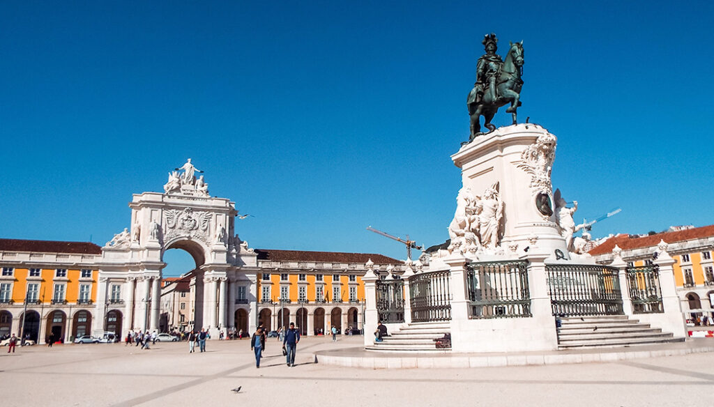
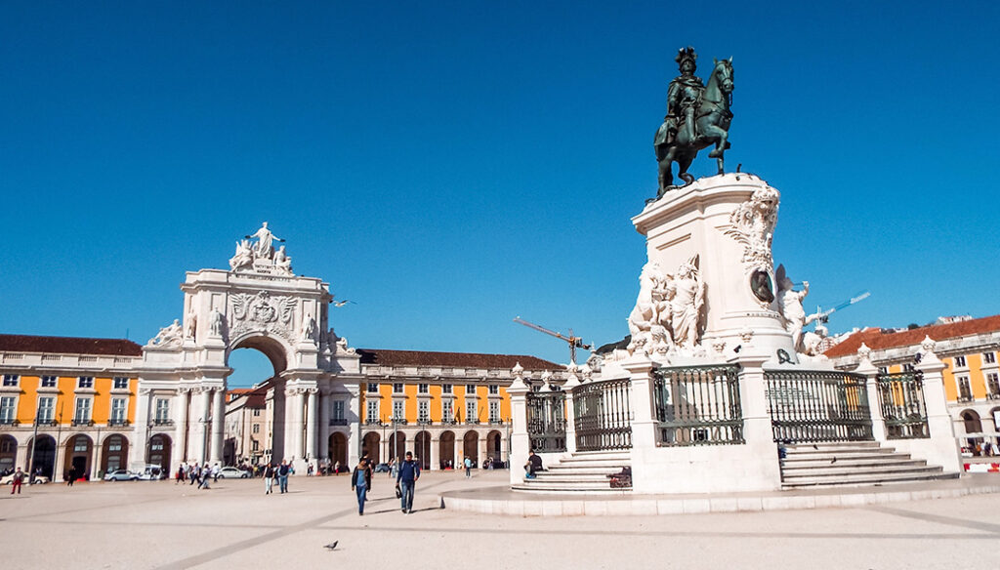

Praça do Comércio
A Praça do Comércio é um dos pontos mais icônicos de Lisboa, localizada às margens do Rio Tejo.
Descubra a capital de Portugal, sua cultura, história e pontos turísticos incríveis.
Conheça os pontos turísticosA Praça do Comércio é um dos pontos mais icônicos de Lisboa, localizada às margens do Rio Tejo.
O Castelo de São Jorge oferece uma vista panorâmica da cidade e é um marco histórico imperdível.

O Arco da Rua Augusta celebra as conquistas portuguesas e marca a entrada triunfal para o centro da cidade.